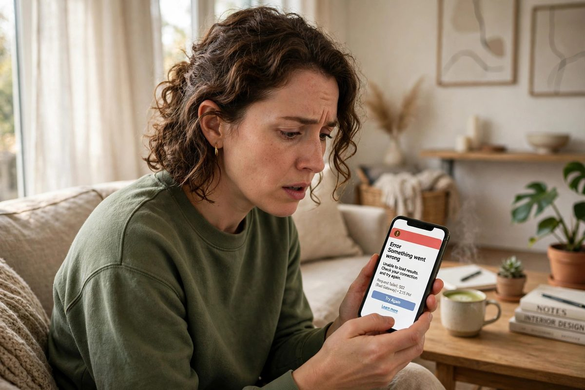

Instagram Video Download Not Working? Fixes for Common Errors
Why Instagram downloads fail and how to fix each problem, from disabled downloads to login and network errors.
When an Instagram download fails, the cause is usually one of a small number of things, and each one has a clear check. Working through them in order, from the link to the video's settings to your own device, finds the problem faster than trying random fixes. This guide covers the common errors and what to do about each one.
Check the link first
Copy the link again from the Share button on the post or Reel, rather than typing it by hand. A single wrong character in the shortcode points to a different post or to nothing. Make sure the link is to a post or a Reel, not to a profile, the home page, or the Explore page. Open the link in a browser and confirm the content still exists: deleted posts, expired Stories, and accounts that went private all fail in every tool, and that is not a problem you can fix.
The creator or the licence blocked it
The most common reason a download option is missing is that the creator disabled downloads for that Reel, or the music licence does not allow it. Instagram shows no error message for this; the option simply is not there. Private accounts block downloads entirely, and age-restricted content is also restricted. If the video plays in Instagram but cannot be downloaded, this is almost certainly the reason, and no legitimate tool can override it.
App and network problems
If Instagram itself misbehaves, update the app, restart your phone, and check your connection. A download that stalls is often a weak Wi-Fi signal or a full storage warning. Check your free space, because a long Reel at high quality needs room, and switch from mobile data to Wi-Fi for large files. If you use a VPN, try turning it off, because Instagram sometimes blocks or throttles VPN traffic. Clearing the app cache in the phone settings can also fix a stuck download.
Third-party tools breaking
Third-party downloaders break frequently because Instagram changes how videos are delivered. A site that worked last week may fail today, and waiting a day or two sometimes helps while the developer updates it. If a site asks you to log in, to install an app, or to pay to fix the error, close the tab: those are scams, not fixes. The official Save feature and the creator-approved download are the options that keep working, because they are part of Instagram itself.
Check Instagram's status
Sometimes the problem is not your phone, your link, or the video: Instagram itself is down. Outages happen several times a year, and during one, downloads fail, posts will not load, and the app shows vague errors that look like a problem with your account. Before you spend an hour troubleshooting, check whether other people have the same problem: search the web for Instagram down, ask a friend whether their app works, or try opening instagram.com in a browser. If it is an outage, there is nothing to fix on your device, and the only sensible action is to wait. Do not reinstall the app during an outage, do not change your password, and do not enter your login on a site that claims it can fix the problem. Patience is the fix, and Instagram usually restores service within a few hours.
Frequently Asked Questions
Why is there no download option on a Reel?
The creator disabled downloads, or the music licence blocks it. That is a deliberate restriction, not a bug.
Why does a downloader site say the link is invalid?
The link may be to a profile or a Story that expired, or the shortcode may have a typo. Open the link first to check it.
Why does Instagram log me out when I use a downloader?
Third-party apps can trigger Instagram's security checks. Avoid apps that ask for your login.